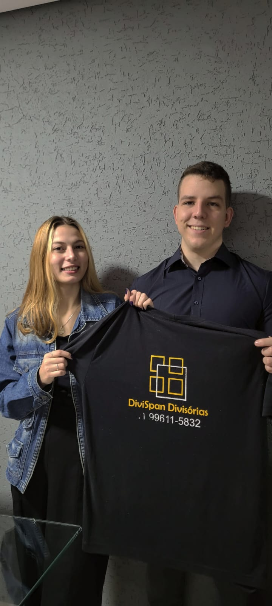

Divispan recebe aluna da PUCPR para falar sobre empreendedorismo e inovação
19 de junho de 2023
Nos últimos meses, entre maio e junho, a Divispan Divisórias recebeu a aluna Alessandra Bulka de Ramos para falar sobre como a empresa cresceu e sua trajetória.
Encontro esse que se deu por um trabalho da faculdade, da disciplina de Empreendedorismo e Inovação, o intuito era conversar com os representantes de uma empresa e fazer anotações sobre estratégia, sobre a trajetória e história da companhia.
Os representantes entrevistados foram Igor Spanguemberg, gestor financeiro e de marketing, onde foram conversados tópicos como as etapas do trabalho, os cargos e perguntas sobre comunicação, e a Carla Rejane, pioneira e uma das fundadoras da Divispan, onde pontos sobre como empreender foram abordados.
Confira as entrevistas aqui:
Veja fotos e depoimentos:
